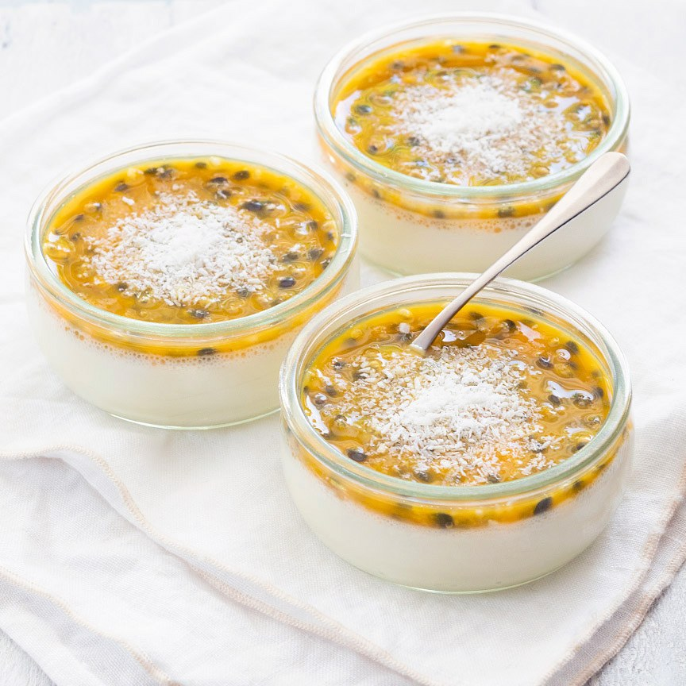

Panna cotta kokos passievrucht
Een heerlijk tropisch dessert; romige panna cota van room en kokosmelk met een laagje frisse passievrucht.
Ingrediënten
- 200 ml slagroom
- 200 ml kokosmelk
- 3 blaadjes gelatine
- 2 eetlepels gerapste kokos
- 2 passievruchten
- 3 eetlepels suiker
Bereidingswijze
- Schenk de slagroom en kokosmelk in een pannetje en voeg de suiker toe. Laat dit zachtjes koken zodat de suiker oplost.
- Laat ondertussen de blaadjes gelatine 5 minuten weken in koud water en knijp ze daarna uit. Haal het pannetje van het vuur en voeg de gelatine toe. Roer de gerapste kokos erdoor en schenk het mengsel in glaasjes.
- Laat minimaal 2 uur opstijven in de koelkast. Snijd de passievruchten doormidden en schep het vruchtvlees en zaadjes er uit of ontdooi blokjes ingevroren passievrucht uit de vriezer. Verdeel dit over de panna cotta. Serveer direct of bewaar maximaal 2 dagen in de koelkast.
